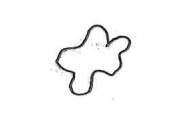
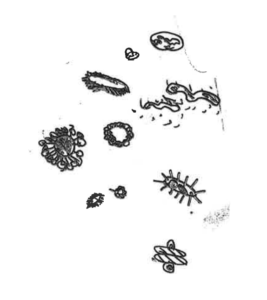
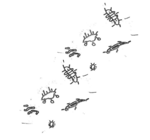
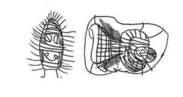
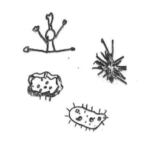
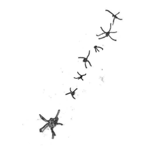

{#6} Living with the trouble
«I dreamed that the visible universe is the physical person of God; that the vast worlds that we see twinkling millions of miles apart in the fields of space are the blood corpuscles in His veins; and that we and the other creatures are the microbes that charge with multitudinous life the corpuscles.»
Mark Twain, 3,000 Years Among the Microbes
«Twain drew upon contemporary scientific theories of disease, specifically, the new germ theory, which postulated that disease was caused by microbes, and spread through contact with infectious individuals. This discovery, rapidly adopted by the public, suggested what many already understood that the borders separating individuals, and nations, were unpredictably porous.»
R. L. Nichols, Infectious Imperialism: Mark Twain, Microbes and the Borders of the Citizen

Dear germs,
you may have been wondering whatever happened to us? Maybe you were even relieved of not receiving this nuisance of a newsletter… But surprise surprise: we are still here, and more virulent than ever!
Much like Treponema pallidum – one of the “spirits” that infested the stories we recently read and discussed about – after the first superficial outspurts, later this summer we went latent and installed into the body of Festivaletteratura. There we exploited the resources of our host organism, enrolled its cells, travelled through its arteries, tickled its lymphatic nodes. This subterranean work gave life to Scienceground 1.5, an open and flexible space dedicated to exploring new ways of engagement for scientists among themselves, and with the public.
We are now ready to start the third stage of the infection: attacking your neural system! Below you will find a digest of some of the ideas and contents we ran at Scienground 1.5, and an idea on how you can get involved in the process. The material of Scienceground 1.5 is being elaborated and will become part of a fanzine, you will soon hear about it…
And if you have no idea what we are talking about, check out our blog and previous newsletters and soon you will be on track!

Diplomacy
One of our guests, philosopher and science communicator Lynn Chiu, brillantly explaind that modern immunology is moving towards a convivial model of our relationship with microbes. Drawing from the work of philosopher in biology Thomas Pradeu (The limits of self: Immunology and biological identity), she argued that we should move from a war waged on microbes, to a diplomacy with microbes.
Lynn Chiu also managed to condense the spirit of Scienceground in just three tweets:
Me: interdisciplinary engagement and public engagement should be – in addition to teaching and research – part of the central pillars of being an academic in our current society. They constitute distinct forms of intellectual growth & knowledge development.
Also: all of these pillars can become transformative experiences when they take place outside of the current academic reward/incentive structure.
Thus I am making here a different argument than the standard social and moral duty to disseminate “correct” information to a deficient audience. This is about becoming a better scholar/teacher & co-creating knowledge and stances with different types of experts & professionals.
For more considerations by Lynn on her participation, see her piece for Medium A Philosopher of Biology at a Science Festival in a Literary Festival.

Culture
This word means either intellectual growth or bacterial breeding. Maybe a distinction is not necessary, since finding the conditions essential for the reproduction of other living entities can be the best way to expand our knowledge.
Moreover, science shows that in time (history) and space (geography), different experimental approaches towards the same problem are possible, and they carry some value of truth in them. This, in a way, is culture: having a constant thread which stays, while other things change.
That is why we are strongly convinced that science belongs in a literature festival: to bring new perspectives to questions that are as old as humankind.
In our laboratory How small is the world we tried to cross different perspectives: the point of view of children on bacteria and the observations which can be done by using instrumentation of XIXth century’s scientists.
The pictures which decorate this newsletter are the children’s representations of microbes before they met them in person!

Shamans and Spirits
A main guest at Festivaletteratura was anthropologist César Giraldo Herrera, who studies shamans and their spirits, and how their knowledge translates into modern microbiology.
For a while we believed César was a shaman-spirit himself. On his arrival we had appointment on the entrance stairs in front of the the Mantova station. When he failed to show up we called him to ask «where are you?», «On the stairs in front of the station!», «Then you must be a spirit!». Turns out he was in Padova!
Finally we met him in flesh and bone at Festivaletteratura in Mantova to discuss about his book Microbes and Other Shamanic Beings, and we found out he actually embodies shamans/spirits culture.
In his work César Giraldo Herrera suggests that the multitude of beings that populated the perceptual and conceptual world of Amerindian natives, and that correlated to natural events and other personae in the environment, may sometimes be understood as ‘microbes’ rather than as abstract ‘spirits’ – the translation provided by early Christian missionaries after the Encounter.
His argument is based on the medical practices of the shamans, on the myths they told, and of how natives conceived of contagion and illness, fermentations and decompositions. Furthermore, these people had ancestral and efficacious forms of knowledge that allowed them to control the spreading and treatment of diseases – and in fact the Western modern theory of contagion borrowed from natives’ concepts.

Antimicrobial drug resistance
Finally, a most surprising guest involved with Scienceground 1.5 was no less than the Chief Medical Officer of the United Kingdom, Dame Sally Davies, who came to Festivaletteratura to discuss her work on anti-microbial resistance (AMR). Dame Sally offers an excellent discussion of the problems related to antibiotics use and development in her book The Drugs Don’t Work (Penguin, 2013), which was the subject of our latest Book Club reading. Just like climate change, AMR can be considered one of the biggest and most urgent challenges faced by humanity today. And just like climate change, we don’t seem to care enough. After many years as an AMR activist following the publication of her book, Dame Sally feels as passionately about the issue as ever, and most importantly, she acts upon it: she is truly unstoppable! A relentless advocate of her cause, we were lucky to take hold of her for a couple of days, before she flew off to the next leg of her world tour. You can at least try to keep up with her on her Twitter account!

ExTemporanea, the community that takes care of this project, is young, growing… and messy (like all young and growing things). We definitely need some help, and most definitely we need your help, whoever you are, whatever you can do for this project (right now we desperately need English natives who can fluently translate from Italian!). And just because you made it to the very end of this mail, you receive a big virtual kiss — and all the milions of bacteria which come with it!
ET